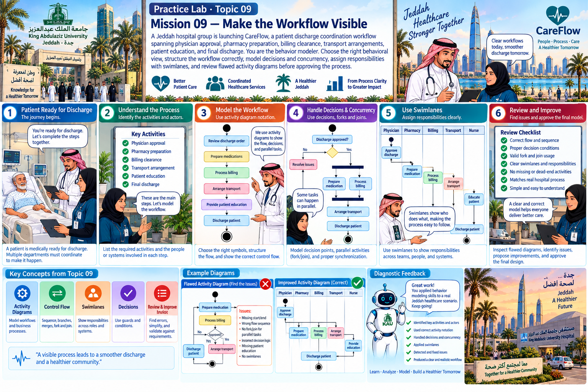

Practice Lab · Topic 09
A Jeddah hospital group is launching CareFlow, a patient discharge coordination workflow spanning physician approval, pharmacy preparation, billing clearance, transport arrangements, patient education, and final discharge. You are the behavior modeler. Choose the right behavioral view, structure the workflow correctly, model decisions and concurrency, assign responsibilities with swimlanes, and review flawed activity diagrams before approving the process.
